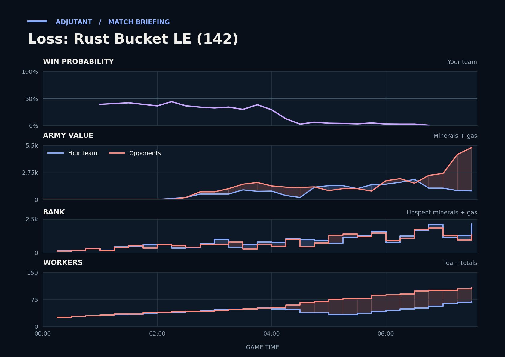

Loss: Rust Bucket LE (142)
Provisional debrief. The full report (timeline, insights and analysis) is being generated.

**Loss.** You lost because the raid on TakeTheTip's natural and main from 3:34 killed their Drones, and the opponents then had more income and army going into the last fight.
**Why**
- 3:34–4:49: Destroyer's Zerglings, Keiser's Oracles and Destroyer's Banelings killed 23 Drones at TakeTheTip's bases. The opponents later had far more workers.
- 6:53–7:35: Already behind on army, you lost 2.4x as much army as they did, mostly to Keiser's Stalkers. Scallop typed gg.